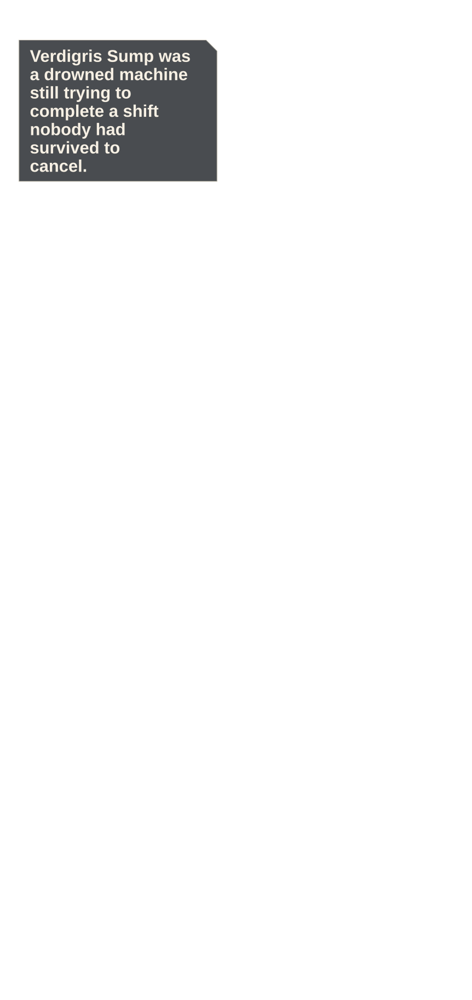
Beat and source
The Verdigris Sump opens around towering oxidized pumps, dark teal water, and one pale pump heart far below.
experiments/reimaginings/ember-lattice/volume/ch06/source/p001.pngEMBER LATTICE · OWNER REVIEW · PHONE
24 continuous panels · 11 action · 343 dialogue words · 4 system moments
Phone reader · Full-size reader · Compact review · Action strip · Diagnostics

The Verdigris Sump opens around towering oxidized pumps, dark teal water, and one pale pump heart far below.
experiments/reimaginings/ember-lattice/volume/ch06/source/p001.png
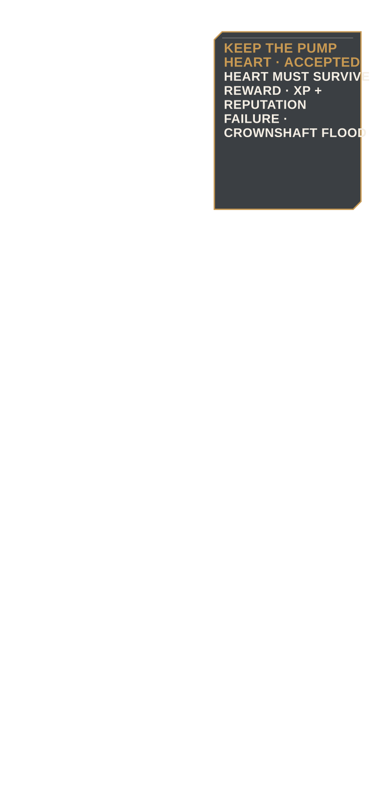
Keep the Pump Heart opens beside Elian's L5 status, filter count, faction reward, and failure consequence.
experiments/reimaginings/ember-lattice/volume/ch06/source/p002.png
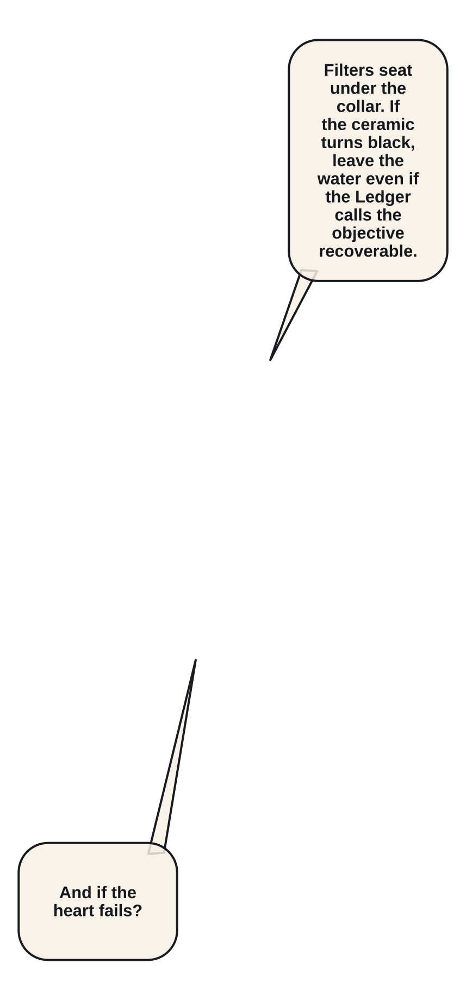
Elian and Mira fit two Verdigris Filters while Orin seals his kiln satchel.
experiments/reimaginings/ember-lattice/volume/ch06/source/p003.png
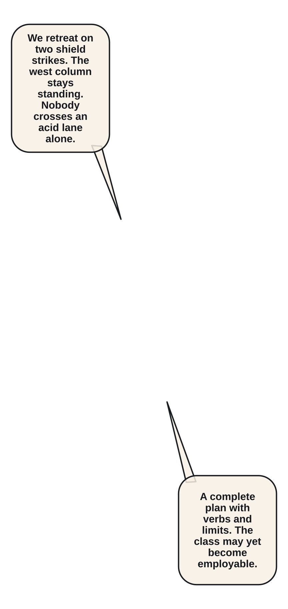
The three adults agree on a retreat signal and which pump column must remain intact.
experiments/reimaginings/ember-lattice/volume/ch06/source/p004.png
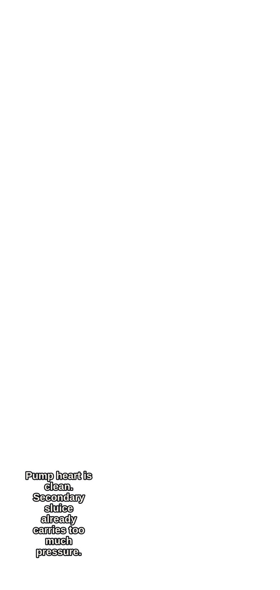
A quiet vertical view isolates the pale pump heart inside a broad ring of dark water.
experiments/reimaginings/ember-lattice/volume/ch06/source/p005.png
Three reed-bodied Mire Choir constructs rise with a shared Level 4–6 threat card.
experiments/reimaginings/ember-lattice/volume/ch06/source/p006.png
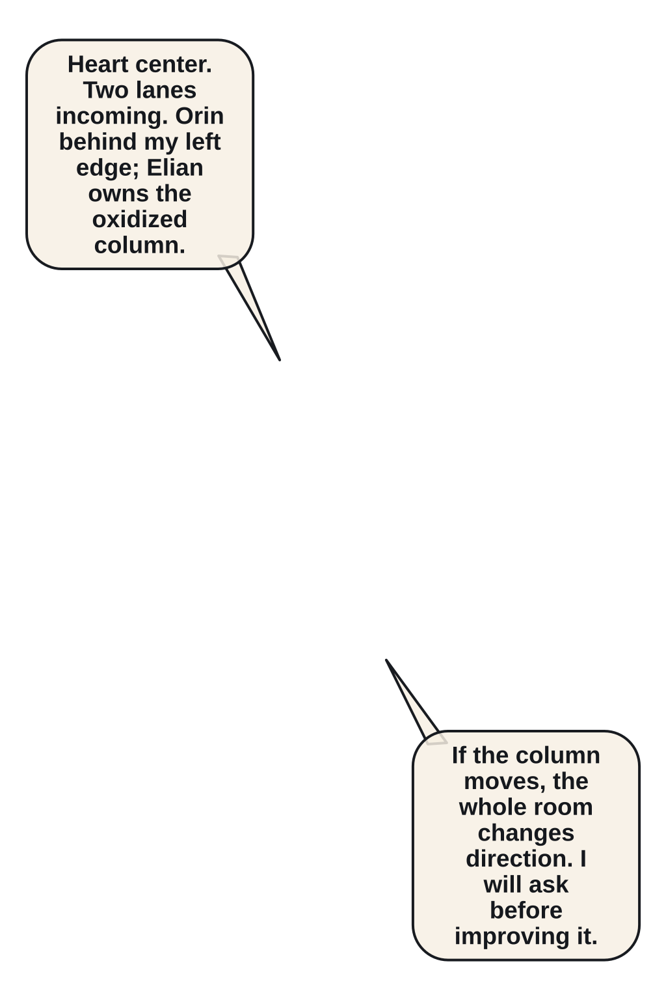
Side-on geography fixes the pump heart center, party left, Choir right, and two incoming water lanes.
experiments/reimaginings/ember-lattice/volume/ch06/source/p007.png
The first Choir sends a flat acid-water lane toward Orin's position.
experiments/reimaginings/ember-lattice/volume/ch06/source/p008.png
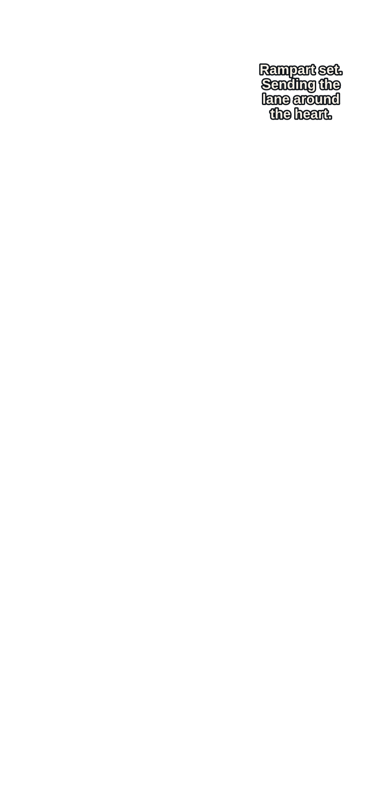
Mira anchors Rampart Thrust and redirects the lane around the pump heart.
experiments/reimaginings/ember-lattice/volume/ch06/source/p009.png
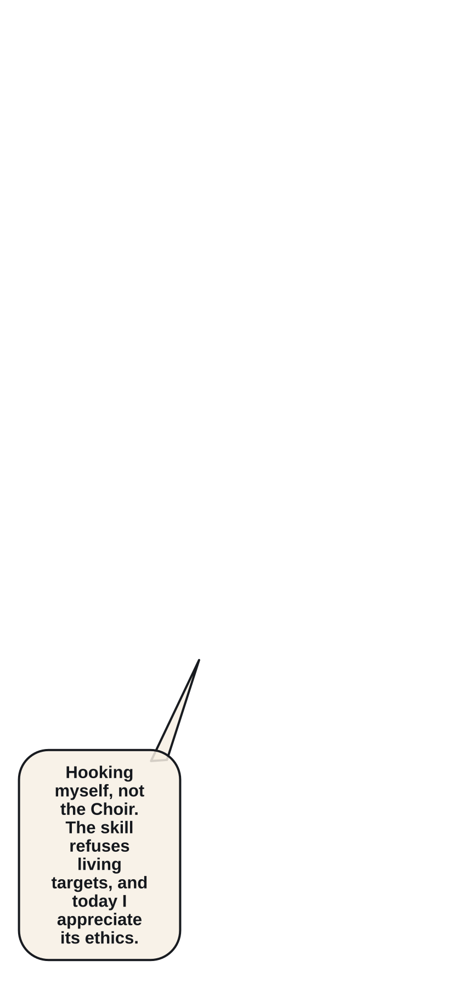
Elian Fault Hooks to the oxidized column rather than pulling the living enemy.
experiments/reimaginings/ember-lattice/volume/ch06/source/p010.png
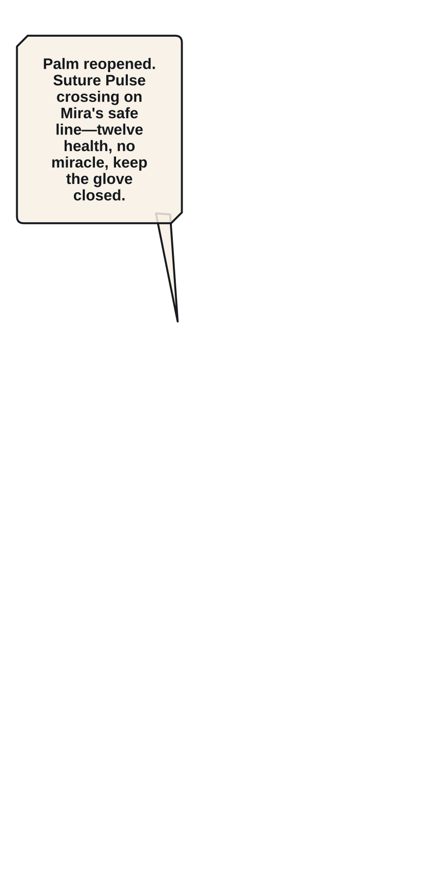
Orin fires Suture Pulse across the safe line and closes Elian's reopened palm wound.
experiments/reimaginings/ember-lattice/volume/ch06/source/p011.png
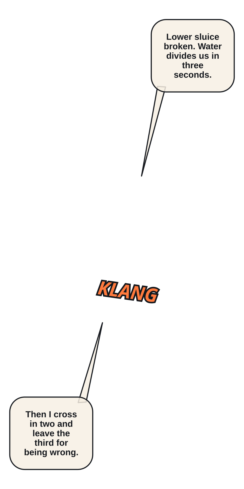
The second Choir breaks the lower sluice, flooding the space between Mira and Elian.
experiments/reimaginings/ember-lattice/volume/ch06/source/p012.png
Elian lands on a turning pump blade with the exit route now behind the enemy.
experiments/reimaginings/ember-lattice/volume/ch06/source/p013.png
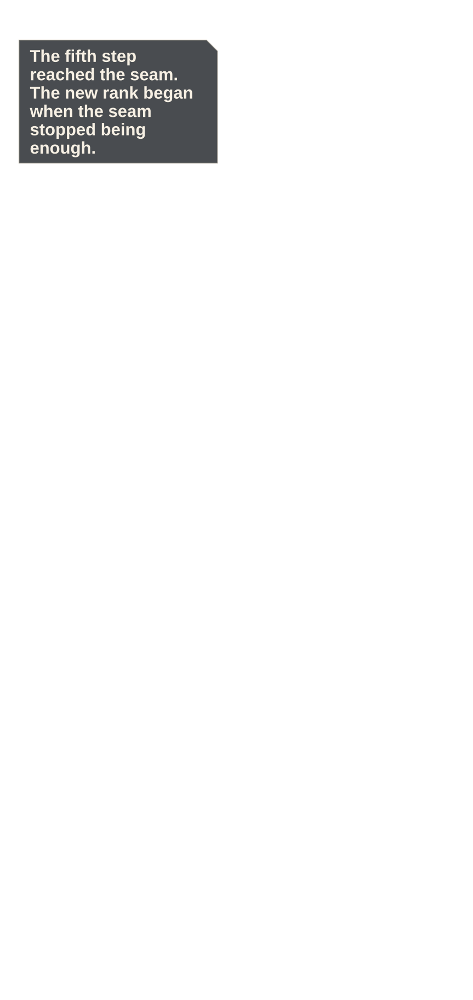
His fifth verified Fault Step crosses one seam, but the next safe seam turns away mid-stride.
experiments/reimaginings/ember-lattice/volume/ch06/source/p014.png
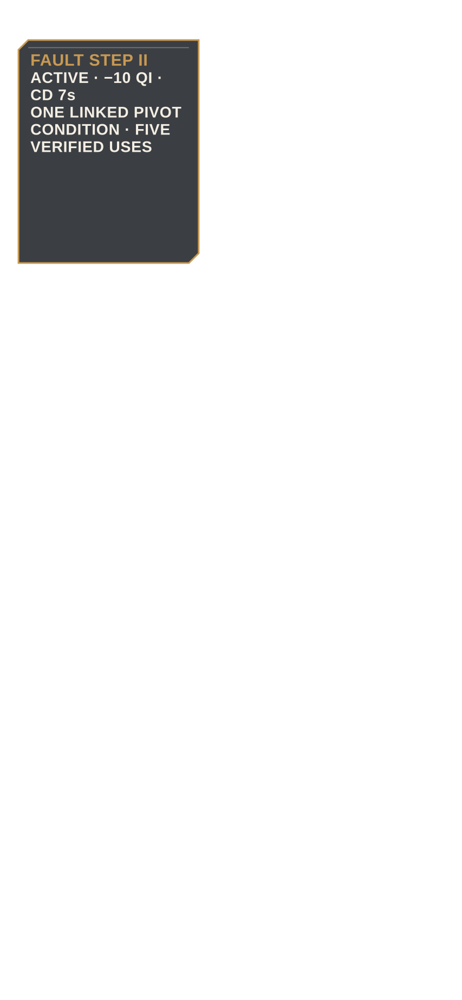
Fault Step II unlocks, adding one linked pivot with exact increased cost and reduced cooldown.
experiments/reimaginings/ember-lattice/volume/ch06/source/p015.png
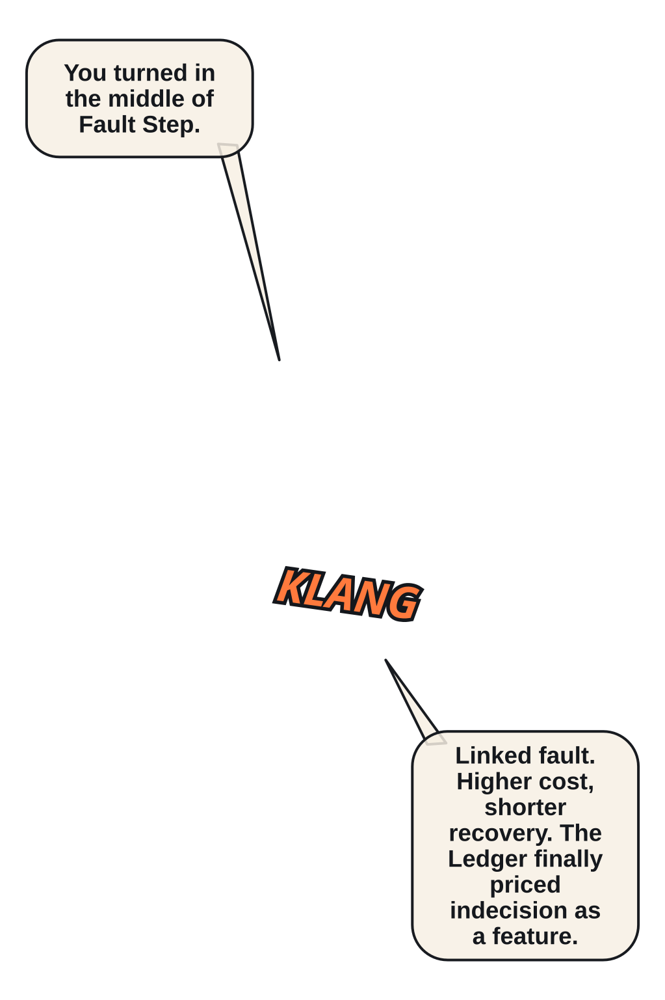
Elian pivots at the second fault and reaches Mira's shield side without crossing the acid lane.
experiments/reimaginings/ember-lattice/volume/ch06/source/p016.png
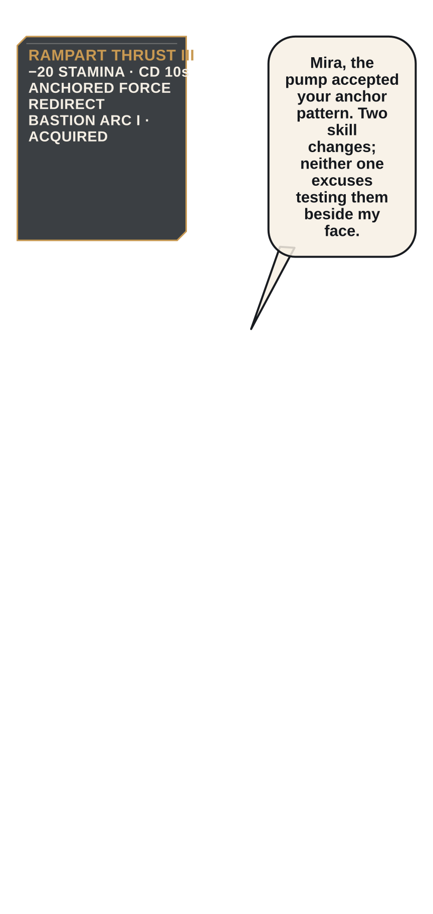
Rampart Thrust III and Bastion Arc I appear after Mira learns the pump's anchored flow.
experiments/reimaginings/ember-lattice/volume/ch06/source/p017.png
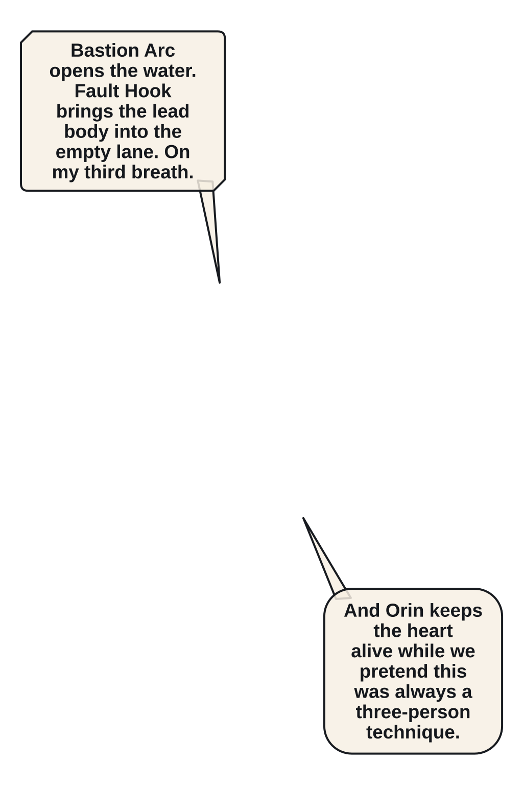
Mira opens a debris cone while Elian hooks the lead Choir into the empty lane.
experiments/reimaginings/ember-lattice/volume/ch06/source/p018.png
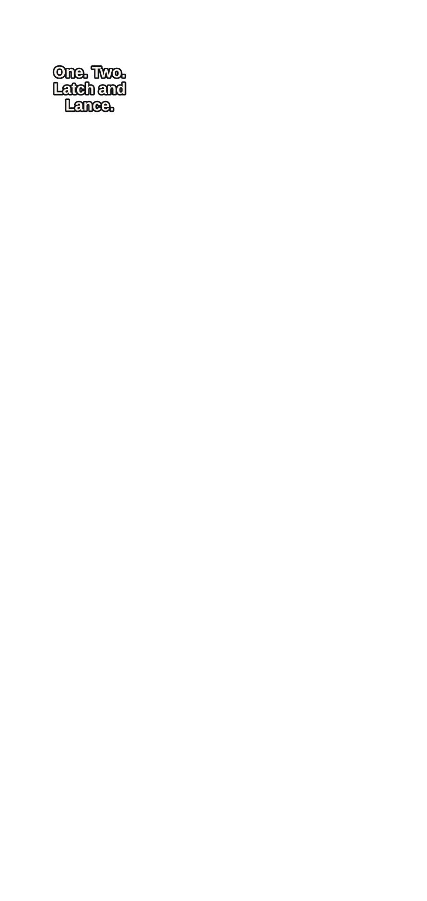
Latch and Lance converges hook and spear on the Choir's shared breath joint in one restrained spectacle.
experiments/reimaginings/ember-lattice/volume/ch06/source/p019.png
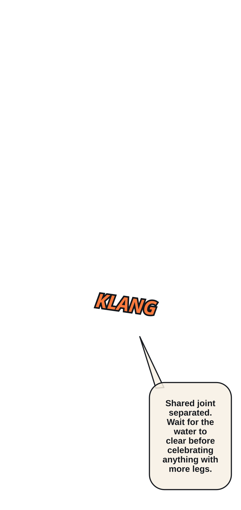
The three constructs collapse downstream, leaving the pump heart intact and the secondary sluice unstable.
experiments/reimaginings/ember-lattice/volume/ch06/source/p020.png
Mob XP crosses Level 6; HP/Qi maximums and two unspent points update once.
experiments/reimaginings/ember-lattice/volume/ch06/source/p021.png
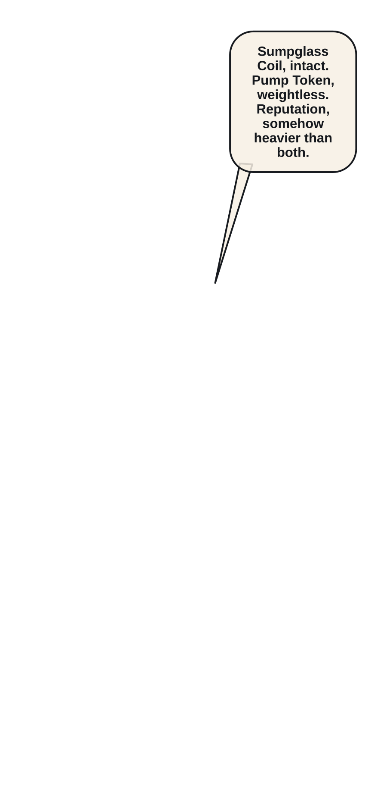
A Rare Sumpglass Coil and weightless Pump Token rise from the restored pump housing.
experiments/reimaginings/ember-lattice/volume/ch06/source/p022.png
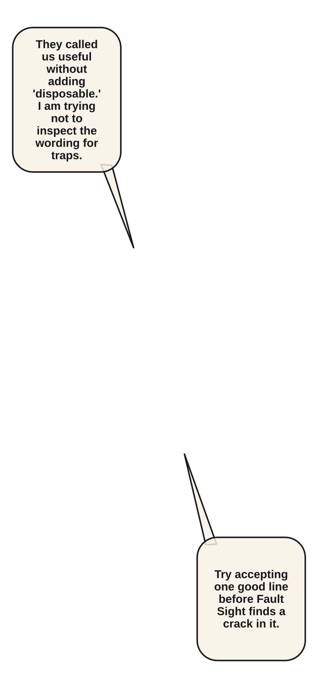
A remote Free Delvers notice calls the party useful, and Elian finally accepts the word.
experiments/reimaginings/ember-lattice/volume/ch06/source/p023.png
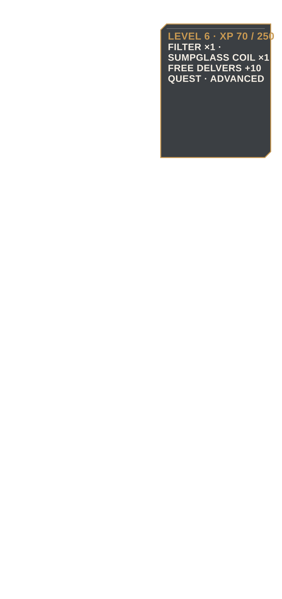
Quest ADVANCED, 70/250 XP, Free Delvers reputation, filters, skills, and pump state reconcile.
experiments/reimaginings/ember-lattice/volume/ch06/source/p024.png